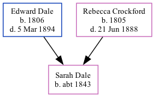

Sarah Ann Dale c1843 -
[ Home ] | [ Calendar ] | [ Surnames Index ] | [ Family History ]The child of Edward Dale (an agricultural laborer) and Rebecca Crockford, Sarah Dale, the three times great-aunt of <a href="I1.html">Nigel Horne</a>, was born in Chartham, Kent, England <i>c.</i> 1843<span class="citation">1,2</span> and baptized there on Dec 17, 1843.</p><p>Throughout her life, Sarah lived in several places: at her birthplace in 1851<span class="citation">1</span>; in Chartham Hatch, Kent, England on Mar 30, 1851<span class="citation">3</span>; and at her birthplace in 1861<span class="citation">2</span>.
Parents
- Edward was born in 1806
- Rebecca was born in 1805
Citations
- 1851 England Census Online publication - Provo, UT, USA: The Generations Network, Inc., 2005.Original data - Census Returns of England and Wales, 1851. Kew, Surrey, England: The National Archives of the UK (TNA): Public Record Office (PRO), 1851. Data imaged from the National
- 1861 England Census Online publication - Provo, UT, USA: The Generations Network, Inc., 2005.Original data - Census Returns of England and Wales, 1861. Kew, Surrey, England: The National Archives of the UK (TNA): Public Record Office (PRO), 1861. Data imaged from the National
- 1851 England, Wales & Scotland Census - Findmypast (was age 8 and the daughter of the head of the household)
Family Tree
Generated by Ged2Site. Last updated on Jul 20, 2025